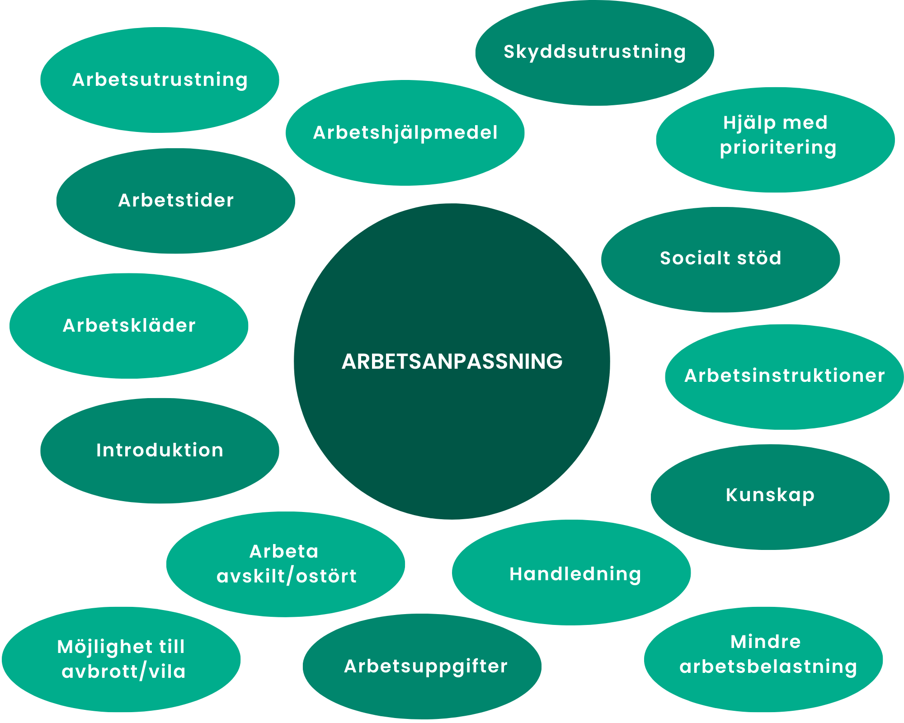
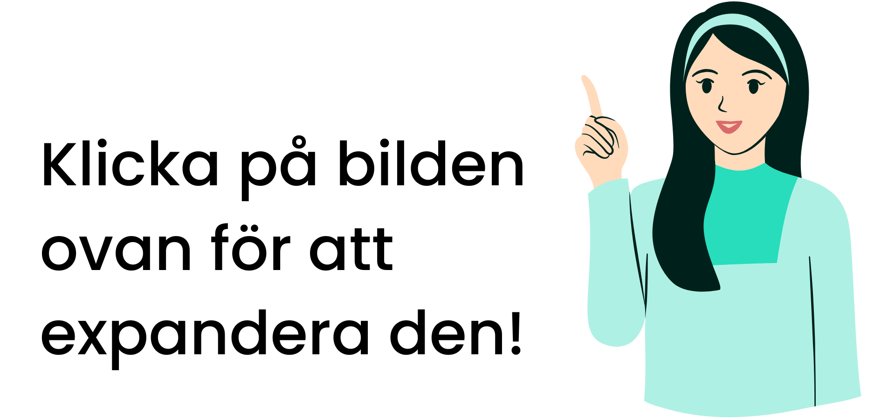

Genomförandet av arbetsanpassning
Arbetsanpassning kan genomföras på många olika sätt. Det kan till exempel innebära:
- Ändrade arbetstider
- Anpassning av arbetsuppgifter
- Användning av arbetshjälpmedel
- Socialt stöd
- Särskilda arbetsinstruktioner
- Personligt anpassad skyddsutrustning


Identifiera behov av arbetsanpassning
Arbetsgivaren ska kontinuerligt undersöka om någon arbetstagare behöver arbetsanpassning. Detta kräver en aktiv dialog med arbetstagarna samt rutiner för att fånga upp signaler om behov.
Delaktighet från arbetstagaren
Berörd arbetstagare ska ges möjlighet att medverka i utredningen, utformningen och uppföljningen av arbetsanpassningen. Detta stärker anpassningens kvalitet och bidrar till en lösning som är realistisk och genomförbar.